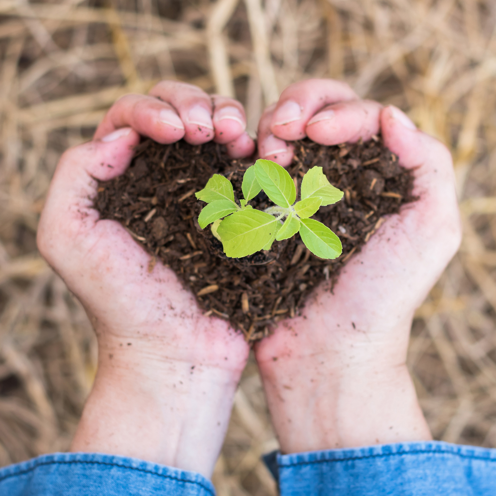
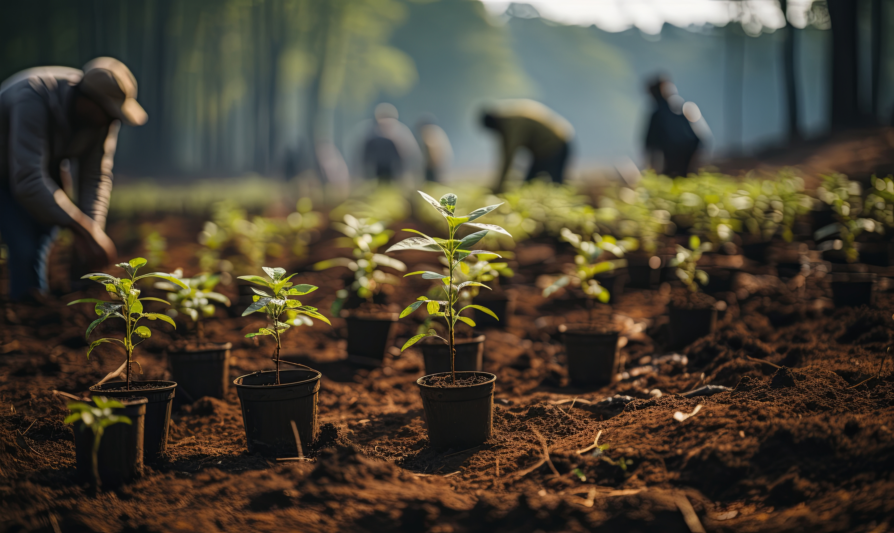
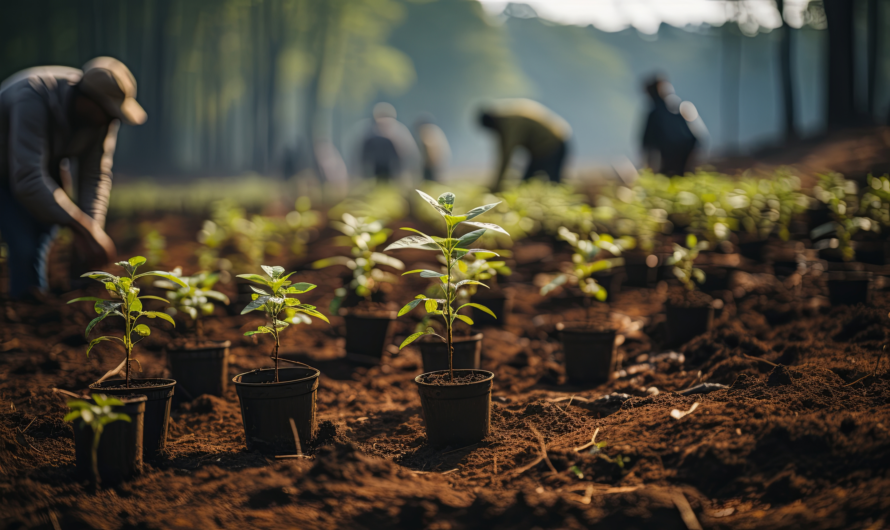
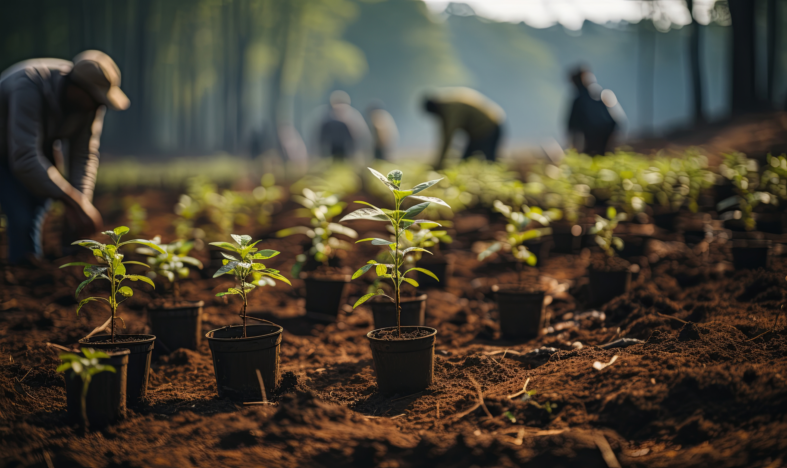

Sobre nosotros.

Lungs of the Earth (Pulmones de la Tierra) es una iniciativa global dedicada a combatir la deforestación y promover la restauración de los ecosistemas naturales. Los árboles son los pulmones de nuestro planeta y nuestra misión es garantizar que prosperen para las generaciones futuras.
Nuestra Mision ♥

Nuestro objetivo es plantar millones de árboles en todo el mundo, educar a las comunidades sobre la importancia de la sostenibilidad y colaborar con organizaciones locales para generar un cambio ambiental duradero. Juntos, podemos crear un planeta más saludable y más verde.
Manos a la obra!



 



Únanse a nosotros para marcar la diferencia. Ofrézcase como voluntario, haga una donación o colabore con nosotros para ayudar a reforestar nuestro mundo.
Conectemos!